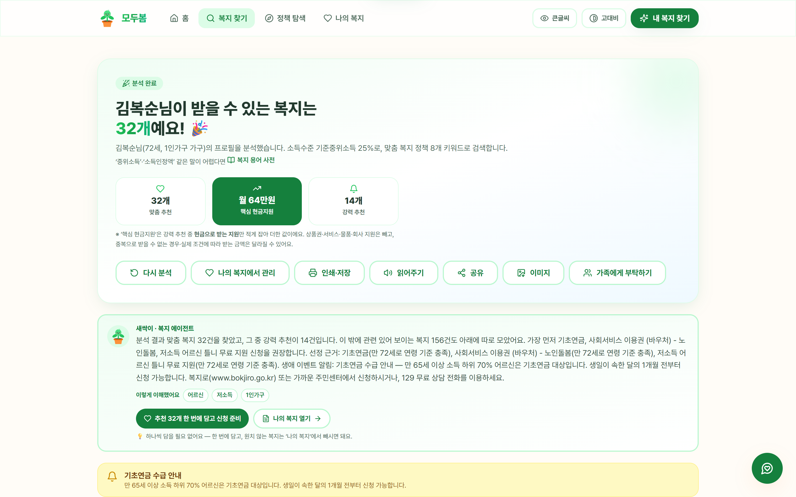
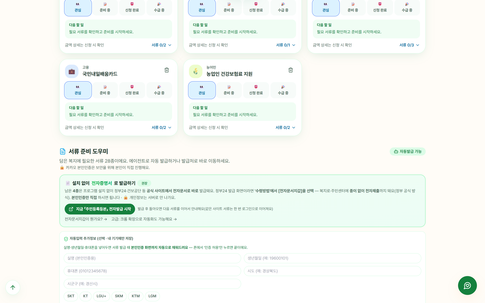

몰라서 못 받는 복지를 찾아주는
개인 복지 AI 에이전트
찾기 → 이해 → 서류·신청 실행 → 사후관리까지, 개인정보는 내 기기 안에서만
2026 AI·SW 중심대학 디지털 경진대회 SW부문 본선 · (대학명) (팀명)
대한민국 복지는 신청해야 받는 구조입니다.
그런데 정책은 정부·지자체·민간재단에 흩어져 있고,
말은 어렵고(기준 중위소득·소득인정액…),
신청은 더 어렵습니다.
가장 필요한 사람이 가장 닿지 못합니다 —
독거 어르신 · 중증장애인 · 위기청년 · 외국인 주민.
"72세 혼자 사는데
소득이 적어요" — 말 한마디(음성)
5,300여 건에서 자격판정
(2026 공식 선정기준)
쉬운 말 설명 · 7개 언어
· TTS 읽어주기
정부24 서류 자동발급
복지로 신청 자동작성
마감 D-day · 갱신 임박
먼저 브리핑
🔁 관찰 결과가 다시 '인지'로 — 앱을 열면 에이전트가 먼저 보고합니다

정부24에서 필요 서류를
순서대로 자동 발급
복지로 신청서에
내 정보 자동 입력
발급된 PDF를
첨부칸에 자동 연결
최종 제출은
사람의 몫으로 남김

시연용 목업이 아니라 실제 정부24·복지로를 그대로 조작합니다.
복지로 딥링크가 있는 정책이면 처음 보는 복지도 같은 흐름으로 이어집니다.
지금 (라이브)
다음
김복순 님 같은 분이 전국에 수백만입니다.
모두봄이 그분들의 몰랐던 권리를 찾아드리겠습니다.
지금 바로 체험하세요
biocode67.github.io/modoo-bom
설치 없이 · 로그인 없이 · 30초
(대학명) (팀명) · 감사합니다 🌱